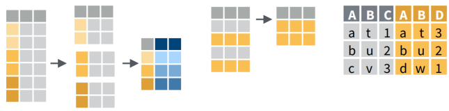
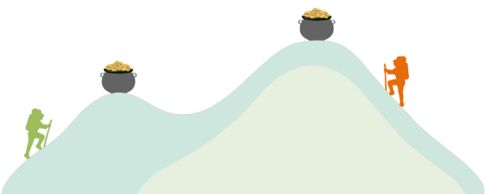
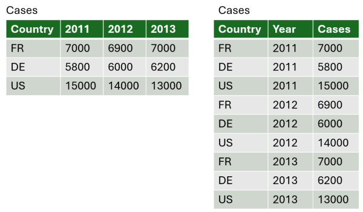
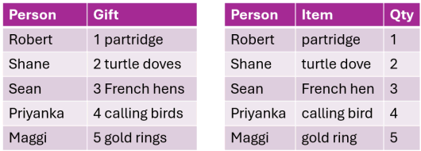
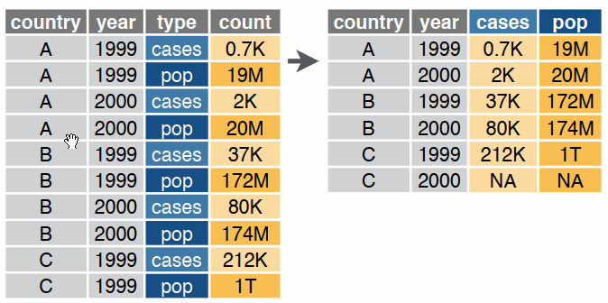
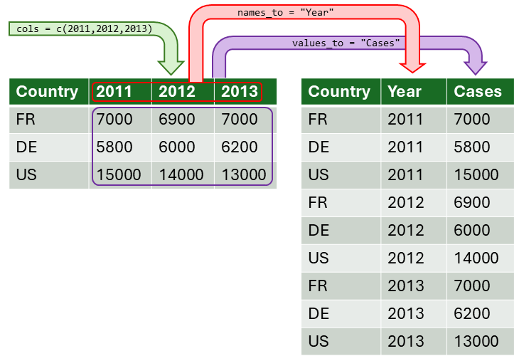
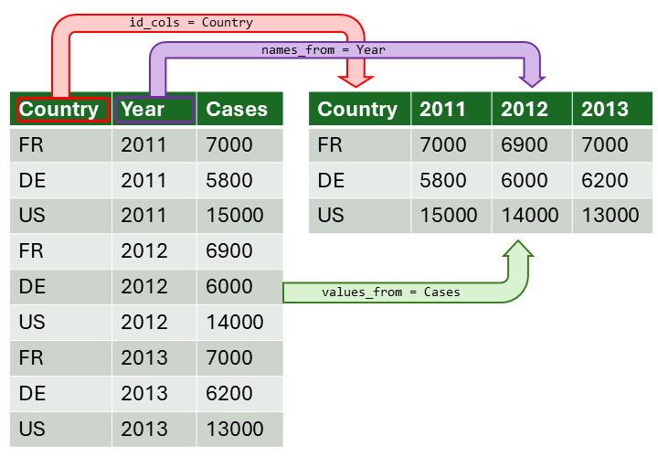
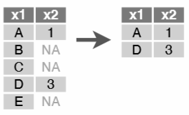
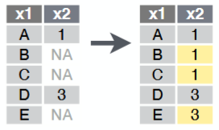
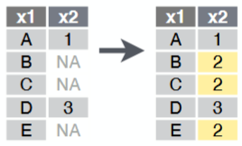

Start Recording


October
17, 2025
Andy Lyons




readrreadxlgooglesheets4havendplyrfilter(), slice()arrange()slice_min(), slice_max()dplyrrename(), rename_with()select(), pull()mutate()mutate()min_rank(), dense_rank(),
row_number()if_else(), case_when()stringrstr_to_lower()str_replace_all()str_split_i()str_trim()mutate() + str_split_i() +
str_trim()tidyr::separate_wider_delim()dplyrleft_join()dplyrgroup_by()summarize()
Why do I have to learn this?
Can’t ChatGPT take care of it for me?
| Let's explore that, shall we... |

Highlights
“Use code completion tools sparingly if you’re a new user.”


Option 1. Turn columns into rows (wide-to-long)

Option 2. Turning rows into columns (long-to-wide, aka pivot tables, cross tab query)

pivot_longer()
pivot_wider()
How are missing values encoded?
-99
""
NA
summary()
is.na(), !is.na()

tidyr::drop_na()

tidyr::fill()

common replacement choices: 0, mean, median, etc.
mutate( new_col = if_else(…) )
tidyr::replace_na()
mutate( new_col = if_else(…) )
mutate( new_col = coalesce(…) )
Warm up:
New stuff:
This exercise will be done in an Quarto Notebook!

Data wrangling operations:
This exercise will be done in an Quarto Notebook!